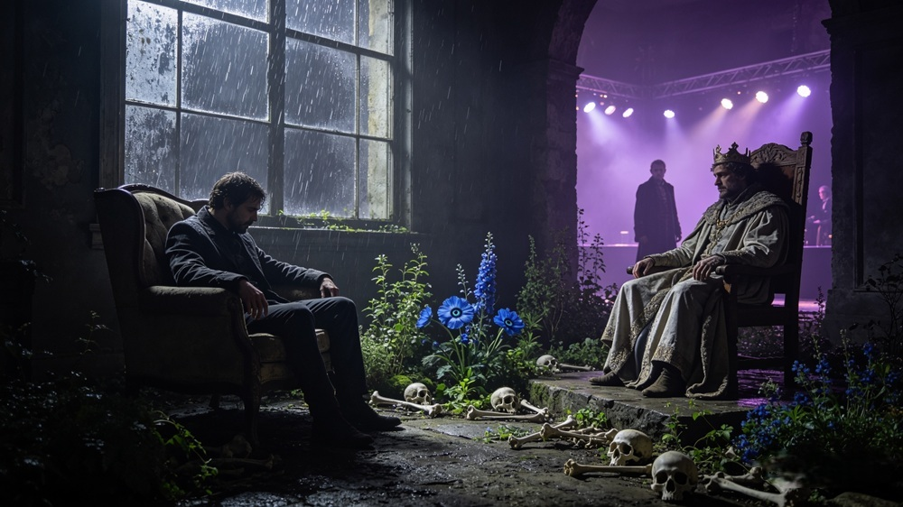
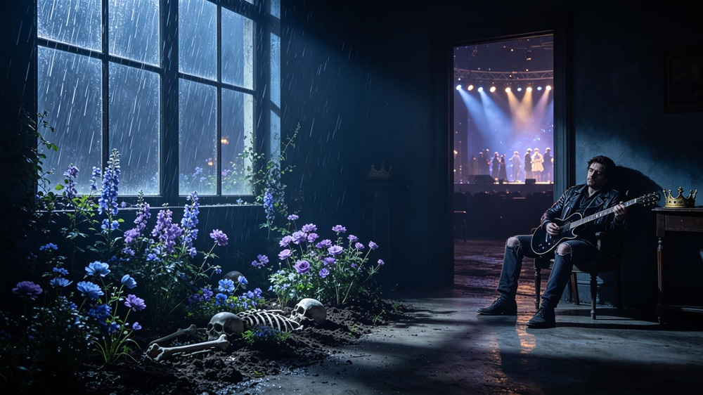
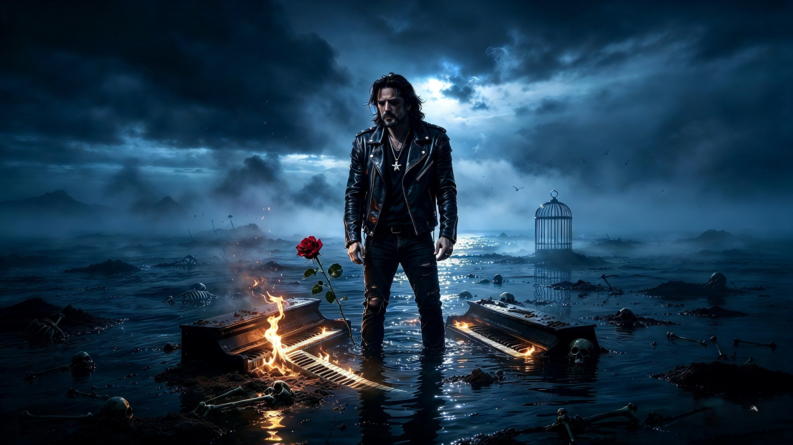

Lo scheletro del passato
Otto brani collegati al romanzo. Una colonna sonora di ombre, memoria, cenere e ritorni.
Ogni brano apre una pagina dedicata con immagine, titolo e player audio.
I QR code del libro possono puntare direttamente a queste pagine.
Tracce disponibili
Seleziona un brano dall’elenco. Ogni scheda ti porta alla relativa pagina di ascolto.

Brano 01
La bestia si cuccia
Primo brano della colonna sonora collegata al romanzo.

Brano 02
Il Giardino delle Ossa
Secondo brano della colonna sonora collegata al romanzo.
Brano 03
Il risveglio
Terzo brano della colonna sonora collegata al romanzo.
Brano 04
Bentornato all’inferno
Quarto brano della colonna sonora collegata al romanzo.

Brano 05
Il mare di niente
Quinto brano della colonna sonora collegata al romanzo.
Brano 06
NON CAPISCO...MA SENTO TE.
Sesto brano della colonna sonora collegata al romanzo.
Brano 07
Il Buio in Controluce
Settimo brano della colonna sonora collegata al romanzo.

Brano 08
Il Disordine
Ottavo brano della colonna sonora collegata al romanzo.